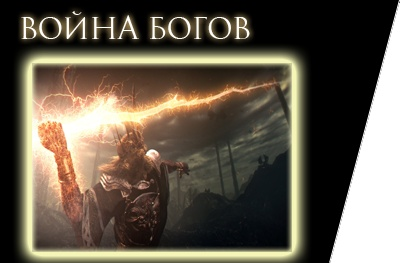
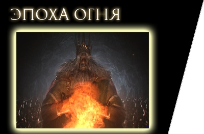
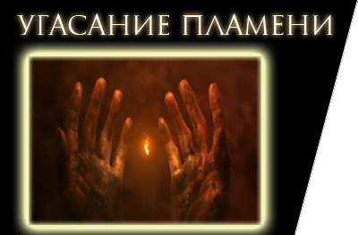

В самом начале мир был холодным и мрачным местом. В ту удивительную пору не существовало ни времени, ни жизни, ни смерти, потому что единственными хозяевами пустынных земель были бессмертные драконы.Их могучие тела покрывала удивительная чешуя, благодаря которой они жили вечно и были неуязвимы.
Такой порядок вещей сохранялся до появления огня, вместе с которым пришли Свет и Тьма. Из Тьмы появились Они, нашедшие в первом пламени души Лордов:
Первое пламя - это огонь, дарующий жизнь и свет. Вышедшие из него великаны подчинялись драконам до тех пор, пока четыре гиганта не нашли в пламени 4 великие души, превратившие их в Богов.
На первую Душу заявил свои права Нито, Первый из Мертвых. На заре Эры Огня он заполучил одну из Великих Душ, после чего стал руководить смертями всех живых существ. В войне против Драконов, Нито насылал миазмы болезней и смерти на своих врагов.Другая Душа принадлежала Ведьме Изалита, могущественной чародейке. В те дни пиромантия еще не появилась, Ведьма и ее дочери были настоящими мастерами магии огня.Третью Душу взял Гвин, Повелитель Света. Мощь Пламени сделала его богом и наделила невероятными силами. В то время Гвин был известен как Повелитель Солнечного Света. В сражениях он использовал чудеса, подобные Копью молнии.Последняя Душа была особенной. Она называлась Темной и попала в руки безымянного карлика (Пигмея), который стал прародителем всего человечества. Она была небольшой и неприметной, как и ее хозяин. Может показаться, что этому слабому карлику достались остатки пира владык, жалкие крохи. Но именно эта Душа окажется сильнее прочих и станет угрозой всему миру.
Пока владыки собирали силы, чтобы начать войну, безымянный Пигмей смог уйти незамеченным и затеряться на долгие годы. Долгое время никто не подозревал о роли, которую ему суждено сыграть в противостоянии света и тьмы. Именно от него произошли люди - он распределил свои жалкие крохи между всеми неживыми, причем каждый человек унаследовал частичку его души. Осколки Темной Души стали известны как человечность.

Повелители не знали как победить столь могущественных созданий, поэтому они просто копили силы и знания - ждали достаточно времени, что бы попытаться уничтожить драконов собственными силами. Этого не мог не заметить один из мудрейших драконов - Нагой Сит. Он знал что близится великая война. Поэтому он принял единственное для себя важное решение - он присоединился к восстанию Гвина и вместе со всеми погубил род драконов. Сит с трудом, но и ненавистью к своим сородичам одновременно, все же предал свой род и помог Гвину и другим Повелителям. Сит рассказал Гвину, что чешую можно пробить молниями. Причина предательства в том, что он родился с дефектом, и ему грозила погибель в случае победы Повелителей - у него не было чешуи бессмертия как у других драконов. За оказанную помощь, Гвин даровал ему титул Герцога и наградил частичкой великой души.
Со своей новообретенной силой Лордов троица бросила вызов драконам. Обладатели Великих Душ с помощью дракона-изгоя, Нагого Сита, родившегося без чешуи бессмертия, истребили драконов. Нито сражался, высвобождая ядовитые облака смерти. Ведьма Изалита и ее дочери создавали огненные штормы, испепелявшие врагов. Гвин молниями разрушал драконью чешую.
В войне Гвина поддерживали его верные рыцари, созданные из серебра. А Нагой Сит похитил Извечный Кристалл, что сделало драконов уязвимыми. И наступила тишина после битвы. Победители стали называть себя Богами. Так печально закончилась великая Эпоха Древних.

Мир процветал, был создан Изалит и построен великолепный город Анор Лондо. Гвин и его соратники после победы над драконами перебрались в Лордран, землю Богов. Появились земли людей: Астора, Балдер, Береник, Карим, Катарина и другие. Основывается город Новый Лондо, властителями которого становятся четверо достойных людей, обладающих даром предвидения, - Четыре Короля. Им также была дарована часть души Лорда от Гвина. Гвин и его семья жили в Анор Лондо.
Старший сын, бог войны, был забыт и лишен божественной силы за утерю летописей, но мы можем знать его имя. Скорее всего, оно начиналось на «Гвин», как и у остальных детей. Гвиневер Принцесса Света была богиней изобилия и женой бога огня Фланна. Младший сын, Гвиндолин, родился под сильным влиянием луны и не был похож на своих отца и сестру. Известно, что его растили как девочку, и что он был крайне привязан к Гвиневер.
Нагой Сит за помощь в войне был награжден титулом герцога и стал заниматься экспериментами по поиску бессмертия. Нагому Ситу в качестве награды за помощь в восстании была дарована частица души Лорда, титул Герцога, а также удел возле Анор Лондо, который был назван Архивами Герцога. Там Сит начал свои исследования по поиску бессмертия, планируя создать чешую бессмертия с помощью похищенного у Вечных Драконов Изначального Кристалла.

Эра изобилия и процветания начинает угасать, как угасает и Пламя. От этого сила Великих Душ слабеет. В Изалите и Анор Лондо паника. Ведьма Изалита решает воссоздать первое Пламя при помощи своей Великой Души, но попытка оказывается неудачной - создав его, она не может его контролировать. Ложе поглотило её, а её детей превратило в ужасных мутантов. Возникает Пламя Хаоса, и Ведьма Изалита оказывается поглощена им - его назвали ложе Хаоса (его частью стала и сама Ведьма).
Ложе стало своеобразным инкубатором для всевозможных демонов хаоса. Город охватило Пламя Хаоса. Отсюда родом такие ужасные и отвратительные этому миру создания как Демон Капра, Демон Прибежища, Демон-Телец и большое количество подобных им монстров. Орды демонов вырываются на волю, а почти все дочери Ведьмы мутируют в ужасных созданий. Изначальная магия огня исчезает, и появляется пиромантия, чья создательница – Квилана. С этих пор Изалит, некогда величественное место с кхмерской архитектурой и храмами внутри огромной пещеры - потерян. Решено затопить город лавой, и теперь его руины охраняют демоны Изалита. Теперь его называют Забытый Изалит, так как мало кто отваживается туда идти, да и незачем.
Квилег Ведьма Хаоса и Прекрасная Госпожа превратились в ужасных паукоподобных существ, сохранив лишь верхнюю часть тела. Квилег обосновалась в нижней части Чумного Города, где ей и ее сестре стала служить зараженная Черногноем нежить.
В это же время рыцари Гвина встречают демонов хаоса в битве. Адское пламя делает серебряные доспехи черными. Свои доспехи они опалили в бою с демонами хаоса, когда те вышли наружу. Многие из них отправились за Гвином, когда тот решил разжечь пламя. Но новый огонь сжёг их дотла, и теперь они бродят по миру бесплотными духами.
еизвестно, кто напал первым: демоны ли вырвались из Изалита, или Гвин захотел овладеть силой потерянной Души. Как бы то ни было, Гвин как никто чувствовал конец этого мира и разделил свою Душу между избранными, в том числе между своими рыцарями: Орнштейном Драконоборецем, Арториасом Путником Бездны, Гохом Соколиным Глазом и Сиараном, Повелителем Клинков. А остаток Души возжег вместе с собой и смог таким образом продлить Эпоху Огня. Гвин жертвует собой (отдает разум и остатки души), отправляясь в Горнило Первого Пламени и поддерживая его искусственно. Таким образом, он стал Лордом Пепла и продлил Эпоху Огня еще на тысячу лет. С тех пор поддержка пламени осуществляется с помощью разжигания костров в Лордране посредством жертвы человечности. К Горнилу за Гвином также последовали его верные рыцари, Первое Пламя опалило их броню, сделав её полностью чёрной. После этого они отправились в скитания по всему Лордрану.
Но эта жертва оказалась напрасной – Пламя продолжало гаснуть. Тогда все боги покидают мрачнеющий день ото дня Анор Лондо, и только Гвиндолин остается, чтобы поддерживать иллюзию света. Сосредоточием этих могущественных чар стал образ Гвиневер, поэтому если напасть на нее, Анор Лондо погрузится во тьму.
Также на защите города остается несколько серебряных рыцарей, и верные королю стражи Орнштейн Драконоборец и Палач Смоуг. Орнштейн сильно отличился во время войны с драконами. Принадлежность к четвёрке говорит о его превосходных боевых навыках, к тому же Орнштейн является капитаном Четырёх Рыцарей. На момент событий игры он — единственный из четырёх рыцарей, который остался в Анор Лондо и охраняет иллюзию принцессы Гвиневер вместе со Смоугом, по приказу младшего сына Гвина, Гвиндолина.
В тоже время одержимый поиском бессмертия Нагой Сит пытался достичь бессмертия с помощью кристаллов. Это объясняет его любовь к Кристальному гроту и большое количество Кристальных тварей. Сит начинает похищать людей с помощью своих подручных и верных ему последователей, но все его изыскания приводят к медленному, но верному сумасшествию из-за изначального кристалла. Тем не менее, открытие не приходит без цены. По мере того, как дракон погружался все глубже и глубже в его исследования, ум Сита начал исчезать, и к тому времени, когда он достиг своей цели, он сошел с ума. Становясь все более и более параноидальным, Сит заперся в архивах, опасаясь, что другие лорды попытаются украсть его бессмертие для себя, его кристалл.
Пророчество об Избранном Мертвеце становится причиной появления двух сторон, представленных изначальными змеями Фрамптом и Каасом. Первый желает, чтобы игрок повторил действия Гвина и пожертвовал собой, чтобы продлить Эпоху Огня еще чуть-чуть, а второй содействует исполнению пророчества об Эпохе Тьмы, в которую погрузится мир.
Все это время до появления протагониста Каас идет к своей цели. В Олачиле он обманом убеждает потревожить могилу Первого человека, Мануса (гриб Элизабет называет первым человеком некоего Мануса, логичный вывод - Хитрый карлик (Пигмей) и есть Манус.), отчего просыпается Бездна, враг всего живого. Тогда Каас искушает Четырех Королей, пообещав им технику высасывания жизни (что приведет к бессмертию), в обмен на человечности жителей Нового Лондо. Слабых сердцем Четырех Королей, которые были отмечены Гвином и получили по осколку его Души, поглощает тьма. Они скармливают человечность жителей изначальному змею, и город постепенно становится пристанищем проклятых душ, рыцари же стали Темными духами на страже затопленных руин - они находят свой дом в Бездне.
Манус, Отец Бездны, после своего пробуждения приходит в ярость. Он начинает искать 2 частицы сломанной подвески, которая, возможно, даст ему еще больше силы и власти. В это время Бездна начинает потреблять всех жителей Олачиля, жители которой начинают впадать в безумство. Превратив ее жителей в монстров, рабов вышедшей из-под контроля собственной человечности наступает упадок и разорение в Поселке Олачиль.
Тогда на устранение угрозы отправляется сэр рыцарь Арториас. Арториас это один из четырех Рыцарей Гвина, легендарный Путник Бездны. После падения Четырёх Королей во Тьму, задачей рыцаря стояло уничтожение тьмы и бездны, или хотя бы найти способ ее сдержать. Для этого ему нужно было отправиться в Бездну, но она поглощает всех кто в неё попадает; единственным выходом стал союз с созданиями Бездны для того, что бы можно было путешествовать по бездне, что недоступно обычному человеку. В след за этими событиями Поселок Олачиль захлестнула волна ужасов. Арториас и его верный друг, волчонок Сиф, вынуждены отправиться туда, на помощь жителям Олачиля.
Но рыцарь не справился с тьмой в Олачиле, и в конечном счёте Бездна поглотила и его. Будучи окруженными порождениями Бездны, Арториас спасает Сифа, оставляя ему свой щит, защищающий от искушения тьмы. Последним жестом перед падением, он прикрыл Сифа своим щитом, создав защитный барьер. Следующее, что мы знаем, - Арториас вернулся в Олачиль уже как Порождение Бездны.
Тьма завладевает Арториасом, а Олачиль окончательно пал под натиском Бездны. Из высших слоёв Олачиля спасается лишь принцесса Заря. Запертая в золотом големе, она освобождается игроком через несколько столетий, но Манус затягивает её в прошлое, чтобы создать себе потомство.
Не дождавшись Арториаса, который давно погиб, трем Хранителям Печати, волшебникам Вильхельма, приходится затопить город Новый Лондо, чтобы остановить распространение тьмы.
Тысяча лет искусственного поддержания Пламени подходят к концу. Свет снова гаснет, а тьма проявляется в новом облике. В мире эпидемия нежити: отмеченные знаком тьмы люди после смерти становились неживыми, теряющими разум и память существами - проклятие бессмертия. Их число так велико, что целые королевства приходят в упадок. Неживых и полых отправляют в специальные резервации, где в темноте и забвении они влачат свое жалкое существование, и начинают ссылать в Лечебницу Нежити - место их последних дней - именно здесь и начинается наше путешествие в этой игре. Чуть позже это место назовут Северное Прибежище Нежити.
В это время уже известно о пророчестве, и некоторые отмеченные тьмой совершают паломничество. Пророчество гласит, что отмеченные Знаком Тьмы (указывает на проклятую нежить. Заклейменные этим знаком возродились после смерти, но когда-нибудь потеряют рассудок и станут Полыми) являются потомками Первого Человека – Мануса, именно им под силу снова возжечь Первое Пламя и продолжить Эпоху Огня.
К таким действиям подталкивает один из Изначальных змеев – Фрампт. Избранный Немертвый способен собрать Души Лордов и стать новым топливом для Первого Пламени. Другой точки зрения придерживается Изначальный змей Каас. Он считает, что нужно погасить пламя и провозгласить Эпоху Тьмы. Эпоха Тьмы – это Эпоха людей, мир, где вся власть будет принадлежать людям, а не Богам.